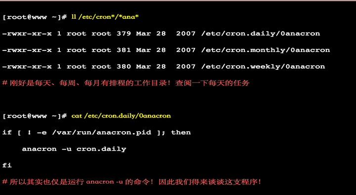

纸上得来终觉浅，绝知此事要躬行。
- 计划任务：指在未来的特定时间里，执行一次某一特定任务。当然，如果同一任务需要在不同时间点执行执行两次、三次或多次，可以视为多个一次看待。
- 周期性任务：指某一任务需要周期性的执行。周期性可以是以分、时、天等为单位，但又不限于这些单位。
1. 任务分类
未来的某时间点执行一次任务
atbatch
周期性运行某任务
crontabanacron
2. 定点执行任务
2.1 at命令
2.1.1 命令详解
格式：at [option] TIME
- TIME -
HH:MM [YYYY-mm-dd]-noon, midnight, teatime-tomorrow-now+#{minutes,hours,days, OR weeks} - option -
-q
QUEUE --l
列出指定队列中等待运行的作业 --d
删除指定的作业 --c
查看具体作业任务 --f /path/from/somefile
从指定的文件中读取任务
注意：作业的执行结果以邮件通知给相关用户
2.1.2 atd 的启动与 at 运行的方式
atd 的启动
- 要使用一次性计划任务时，我们的
Linux系统上面必须要有负责这个计划任务的服务，那就是atd服务。 - 不过并非所有的 Linux distributions 都默认会把他打开的，所以，某些时刻我们需要手动将 atd 服务激活才行。
# 激活的方法
/etc/init.d/atd start
/etc/init.d/atd restart- 配置一下启动时就启动这个服务，免得每次重新启动都得再来一次
chkconfig atd on
at 的运行方式
既然是计划任务，那么应该会有任务执行的方式，并且将这些任务排进行程表中。那么产生计划任务的方式是怎么进行的?
- 事实上，我们使用 at 这个命令来产生所要运行的计划任务，并将这个计划任务以文字档的方式写
/var/spool/at/目录内，该工作便能等待atd这个服务的取用与运行了。
- 事实上，我们使用 at 这个命令来产生所要运行的计划任务，并将这个计划任务以文字档的方式写
不过，并不是所有的人都可以进行 at 计划任务。除非是你认可的帐号，否则先不要让他们使用 at 命令。那怎么达到使用 at 的可控呢?
- 利用
/etc/at.allow与/etc/at.deny这两个文件来进行at的使用限制。 - 加上这两个文件后， at 的工作情况如下所示
- 1）先找寻
/etc/at.allow这个文件，写在这个文件中的使用者才能使用at命令 ，否则不能使用at，即使没有写在at.deny当中。 - 2）如果
/etc/at.allow不存在，就寻找/etc/at.deny这个文件。若写在这个at.deny的使用者则不能使用at，而没有在这个at.deny文件中的使用者，就可以使用at命令了。 - 3）如果两个文件都不存在，那么只有 root 可以使用 at 这个命令。
- 1）先找寻
- 透过这个说明，我们知道
/etc/at.allow是管理较为严格的方式，而/etc/at.deny则较为松散 ，因为帐号没有在该文件中，就能够运行at了。 - 在一般的
distributions当中，由于假设系统上的所有用户都是可信任的， 因此系统通常会保留一个空的/etc/at.deny文件，意思是允许所有人使用 at 命令的意思 。 - 不过，万一你不希望有某些使用者使用
at的话，将那个使用者的帐号写入/etc/at.deny即可，一个帐号写一行。
- 利用
2.1.3 实战演示
# 实例1：三天后的下午 5 点锺执行 /bin/ls
[root@localhost ~]# at 5pm+3 days
at> /bin/ls
at> <EOT>
job 7 at 2016-04-08 17:00
# 实例2：明天17点钟，输出时间到指定文件内
[root@localhost ~]# at 17:20 tomorrow
at> date >/root/2013.log
at> <EOT>
job 8 at 2016-04-06 17:20
# 实例3：计划任务设定后，在没有执行之前我们可以用atq命令来查看系统没有执行工作任务
[root@localhost ~]# atq
8 2013-01-06 17:20 a root
7 2013-01-08 17:00 a root
# 实例4：删除已经设置的任务
[root@localhost ~]# atq
8 2013-01-06 17:20 a root
7 2013-01-08 17:00 a root
[root@localhost ~]# atrm 7
[root@localhost ~]# atq
8 2013-01-06 17:20 a root
# 实例5：显示已经设置的任务内容
[root@localhost ~]# at -c 8
#!/bin/sh
date >/root/2013.log2.2 batch命令
batch 命令用于在指定时间，当系统不繁忙时执行任务，用法与 at 相似。
语法
batch(选项)(参数)
选项
-f
指定包含具体指令的任务文件-q
指定新任务的队列名称-m
任务执行完后向用户发送 E-mail
参数
- 日期时间：指定任务执行的日期时间
实例
# batch
at> echo 1234
at> <EOF>
at> job 5 at Sun Apr 28 08:49:00 20133. 周期性任务计划
相关的程序包
cronie: 主程序包，提供了 crond 守护进程及相关辅助工具cronie-anacron：cronie 的补充程序，用于监控cronie任务执行状况；如cronie中的任务在过去该运行的时间点未能正常运行，则anacron会随后启动一次此任务crontabs：包含 CentOS 提供系统维护任务
确保 crond 守护处于运行状态
- CentOS 7
systemctl status crond
- CentOS 6
service crond status
计划要周期性执行的任务提交给 crond，由其来实现到点运行
- 系统 cron 任务：系统维护作业
/etc/crontab
- 用户 cron 任务
crontab命令
用户 cron
crontab命令定义，每个用户都有专用的 cron 任务文件：/var/spool/cron/USERNAME
系统 cron 任务
# Example of job definition:
# .---------------- minute (0 - 59)
# | .------------- hour (0 - 23)
# | | .---------- day of month (1 - 31)
# | | | .------- month (1 - 12) OR jan,feb,mar,apr ...
# | | | | .---- day of week (0 - 6) (Sunday=0 or 7) OR sun,mon,tue,wed,thu,fri,sat
# | | | | |
# * * * * * user-name command to be executed实战演示
# 晚上9点10分运行echo命令；
10 21 * * * gentoo /bin/echo "Howdy!"
时间表示法：
(1) 特定值
给定时间点有效取值范围内的值
(2) *
给定时间点上有效取值范围内的所有值
表示"每..."
(3) 离散取值：,
#,#,#
(4) 连续取值：-
#-#
(5) 在指定时间范围上，定义步长
/#: #即为步长
# 每3小时echo命令；
0 */3 * * * gentoo /bin/echo "howdy!"3.1 crontab命令
3.1.1 命令详解
格式crontab [-u user] [-l | -r | -e] [-i]
参数选项
-l
列出所有任务-e
编辑任务-r
移除所有任务-i
同-r一同使用，以交互式模式让用户有选择地移除指定任务-u user
仅root可运行，代为为指定用户管理cron任务
3.1.2 注意几下
注意一下
cron任务 - 对于 cron 任务来讲，%有特殊用途 - 如果在命令中要使用%，则需要转义 - 不过，如果把%放置于单引号中，也可以不用转义- 运行结果以邮件通知给相关用户 - (1)
COMMAND > /dev/null- (2)COMMAND &> /dev/null
注意两下
- 1）如果使用
crontab编辑计划任务或直接修改/etc/crontab文件后，计划任务没有生效 - 可能需要重启一下crond服务：service crond restart - 2）当编写
/etc/crontab文件的时候，不要漏了指定执行计划任务的用户，这是和直接用crontab -e编辑不同的 - 3）某用户（如
root）用crontab -e编辑的计划任务存放在/var/spool/cron/root文件下。但最好不要直接编辑它，因为crond执行的时候，会在/tmp目录中建立需要的临时文件，直接编辑会对此有影响，甚至出错 - 4）
cron执行的每一项工作都会被纪录到/var/log/cron这个日志文件中，可以从这个文件查看命令执行的状态
3.1.3 注意事项
注意环境变量问题
- 有时我们创建了一个
crontab，但是这个任务却无法自动执行，而手动执行这个任务却没有问题，这种情况一般是由于在crontab文件中没有配置环境变量引起的 - 在
crontab文件中定义多个调度任务时，需要特别注环境变量的设置，因为我们手动执行某个任务时，是在当前shell环境下进行的，程序当然能找到环境变量，而系统自动执行任务调度时，是不会加载任何环境变量的，因此，就需要在crontab文件中指定任务运行所需的所有环境变量，这样，系统执行任务调度时就没有问题了 - 不要假定
cron知道所需要的特殊环境，它其实并不知道。所以你要保证在shelll脚本中提供所有必要的路径和环境变量，除了一些自动设置的全局变量 - 所以注意如下 3 点 - 1）脚本中涉及文件路径时写全局路径 - 2）脚本执行要用到
java或其他环境变量时，通过source命令引入环境变量 - 3）当手动执行脚本 OK，但是crontab死活不执行时，很可能是环境变量惹的祸，可尝试在crontab中直接引入环境变量解决问题
# 脚本执行要用到java或其他环境变量时，通过source命令引入环境变量
cat start_cbp.sh
!/bin/sh
source /etc/profile
export RUN_CONF=/home/d139/conf/platform/cbp/cbp_jboss.conf
/usr/local/jboss-4.0.5/bin/run.sh -c mev &
# 当手动执行脚本OK，但是crontab死活不执行时,很可能是环境变量惹的祸，可尝试在crontab中直接引入环境变量解决问题。
0 * * * * . /etc/profile;/bin/sh /var/www/java/audit_no_count/bin/restart_audit.sh注意清理系统用户的邮件日志
- 每条任务调度执行完毕，系统都会将任务输出信息通过电子邮件的形式发送给当前系统用户，这样日积月累，日志信息会非常大，可能会影响系统的正常运行，因此，将每条任务进行重定向处理非常重要
- 例如，可以在
crontab文件中设置如下形式，忽略日志输出:0 */3 * * * /usr/local/apache2/apachectl restart >/dev/null 2>&1
系统级任务调度与用户级任务调度
- 系统级任务调度主要完成系统的一些维护操作，用户级任务调度主要完成用户自定义的一些任务
- 可以将用户级任务调度放到系统级任务调度来完成（不建议这么做），但是反过来却不行，
root用户的任务调度操作可以通过crontab –uroot –e来设置，也可以将调度任务直接写入/etc/crontab文件 - 需要注意的是，如果要定义一个定时重启系统的任务，就必须将任务放到
/etc/crontab文件，即使在root用户下创建一个定时重启系统的任务也是无效的
其他注意事项
- 新创建的
cron job，不会马上执行，至少要过 2 分钟才执行。如果重启 cron 则马上执行 - 当
crontab失效时，可以尝试/etc/init.d/crond restart解决问题。或者查看日志看某个job有没有执行/报错tail -f /var/log/cron - 千万别乱运行
crontab -r。它从 Crontab 目录（/var/spool/cron）中删除用户的 Crontab 文件，删除了该用户的所有crontab都没了 - 在
crontab中%是有特殊含义的，表示换行的意思。如果要用的话必须进行转义%，如经常用的date '+%Y%m%d'在 crontab 里是不会执行的，应该换成date '+%Y%m%d' - 更新系统时间时区后需要重启
cron,在 ubuntu 中服务名为cron
3.1.4 实战演示
(1) 如何在秒级别运行任务？
* * * * * for min in 0 1 2; do echo "hi"; sleep 20; done
(2) 如何实现每7分钟运行一次任务?
sleep命令：
sleep NUMBER[SUFFIX]...
SUFFIX:
s: 秒, 默认
m: 分
h: 小时
d: 天# 实例1：每1分钟执行一次myCommand
* * * * * myCommand
# 实例2：每小时的第3和第15分钟执行
3,15 * * * * myCommand
# 实例3：在上午8点到11点的第3和第15分钟执行
3,15 8-11 * * * myCommand
# 实例4：每隔两天的上午8点到11点的第3和第15分钟执行
3,15 8-11 */2 * * myCommand
# 实例5：每周一上午8点到11点的第3和第15分钟执行
3,15 8-11 * * 1 myCommand
# 实例6：每晚的21:30重启smb
30 21 * * * /etc/init.d/smb restart
# 实例7：每月1、10、22日的4 : 45重启smb
45 4 1,10,22 * * /etc/init.d/smb restart
# 实例8：每周六、周日的1 : 10重启smb
10 1 * * 6,0 /etc/init.d/smb restart
# 实例9：每天18 : 00至23 : 00之间每隔30分钟重启smb
0,30 18-23 * * * /etc/init.d/smb restart
# 实例10：每星期六的晚上11 : 00 pm重启smb
0 23 * * 6 /etc/init.d/smb restart
# 实例11：每一小时重启smb
* */1 * * * /etc/init.d/smb restart
# 实例12：晚上11点到早上7点之间，每隔一小时重启smb
* 23-7/1 * * * /etc/init.d/smb restart# 1.安排一个cron每个星期日下午5点执行
0 17 * * sun /scripts/script.sh
# 2.选定执行某几个月里每分钟执行执行
* * * jan,may,aug * /script/script.sh
# 3.安排一个cron来选定每周内完成
0 17 * * sun,fri /script/script.sh
# 4.安排一个cron在每月的第一个星期日执行
0 2 * * sun [ $(date +%d) -le 07 ] && /script/script.sh
# 5.单条cron上执行多任务
* * * * * /scripts/script.sh; /scripts/scrit2.sh
# 6.每年/每月/每周/每日/每时
@yearly /scripts/script.sh
@monthly /scripts/script.sh
@weekly /bin/script.sh
@daily /scripts/script.sh
@hourly /scripts/script.sh
# 7.安排任务在系统重新启动时执行
@reboot /scripts/script.sh
# 8.重定向Cron结果指定的电子邮件帐户
MAIL=escape
0 2 * * * /script/backup.sh3.2 调度异步任务 anacron
anacron 用于不能全天候开机的电脑，替代完成 cron 命令的守护进程
- 由于常规的计划任务通常被安排在午夜执行，如果计算机当时没有开机就不会运行这些任务。
anacron的目的就在于运行这些计划任务，并考虑计算机关机时间。请注意anacron会在启动机器之后，频频执行此类活动，有可能导致计算机反应迟缓- 这也正是
/etc/anacrontab文件中的任务以nice命令开头的原因，这样可以减小它们执行优先级进而限制它们对系统的影响 - 注意，该文件的格式和
/etc/crontab不完全相同，如果对anacron有特殊需求设定，可参看anacrontab(5)手册
优先级和 nice
Unix系统（包括Linux）都是多任务，多用户系统。实际上，几个进程可以并行执行，而且属于不同的用户：内核隔离并管理不同进程对资源的访问。- 作为完成该任务的一部分，就产生了优先级的概念，它允许按需求将某些进程排在其他进程前面。如果已知一个进程可以在低优先级运行，可以通过
nice程序来指定。该程序会享有很少的 CPU 时间，对其他正在运行的进程影响也更小。当然，如果没有其他进程在运行，程序也不会被人为停住。 nice会给优先级添加”niceness“：正值优先级（从１到１９）逐渐降低优先级，而负值（从－１到－２０）增加优先级－但是仅有超级用户可以使用负值优先级。除非特别指明，nice将当前优先级加10。
anacron 与 /etc/anacrontab
anacron其实是一支程序并非一个服务，这支程序在 CentOS 当中已经进入crontab的排程，可以这样追踪看看

anacron的语法
- 所以我们发现其实
/etc/cron.daily/0anacron仅进行时间戳记的升级，而没有进行任何anacron的动作！ 在我们的 CentOS 中，anacron的进行其实是在启动完成后才进行的一项工作任务，你也可以将anacron排入 crontab 的排程中。但是为了担心anacron误判时间参数，因此/etc/cron.daily/里面的anacron才会在档名之前加个0(0anacron)，让anacron最先进行！就是为了让时间戳记先升级！以避免anacron误判crontab尚未进行任何工作的意思。
** 配置文件/etc/anacrontab**
# 配置文件/etc/anacrontab
# cat /etc/anacrontab
SHELL=/bin/sh
PATH=/sbin:/bin:/usr/sbin:/usr/bin
MAILTO=root
# 1一个每天任务 65：开机以后的65分钟执行
1 65 cron.daily run-parts /etc/cron.daily
7 70 cron.weekly run-parts /etc/cron.weekly
30 75 cron.monthly run-parts /etc/cron.monthly注意事项
- 安装
anacron软件包会禁用cron在/etc/cron.hourly/,/etc/cron.daily/,/etc/cron.weekly/, 和/etc/cron.monthly/目录中的脚本 - 避免
anacron和cron重复运行这些脚本。cron命令仍然可用并处理其他计划任务，特别是用户安排的计划任务
4. mail命令
4.1 快速入门
电子邮件服务
smtp: simple mail transmission protocol, 用于传送邮件pop3: Post Office Protocolimap4：Internet Mail Access Protocol
格式mailx [-s 'SUBJECT'] username[@hostname]
- 邮件正文的生成 - (1) 直接给出，
Ctrl+d- (2) 输入重定向 - (3) 通过管道 -echo -e "How are you?\nHow old are you?" | mail
4.2 命令解析
mail命令是命令行的电子邮件发送和接收工具，操作的界面不像elm或pine那么容易使用，但功能非常完整。
语法mail(选项)(参数)
选项
-b<地址>
指定密件副本的收信人地址-c<地址>
指定副本的收信人地址-f<邮件文件>
读取指定邮件文件中的邮件-i
不显示终端发出的信息-I
使用互动模式-n
程序使用时，不使用mail.rc文件中的设置-N
阅读邮件时，不显示邮件的标题-s<邮件主题>
指定邮件的主题-u<用户帐号>
读取指定用户的邮件-v
执行时，显示详细的信息
参数
- 邮件地址：收信人的电子邮箱地址
实战演示
使用一下三种方式都可以给外部邮箱进行邮件发送，但因为前面 2 中都是直接在
shell中敲入邮件内容，因此无法输入中文，即使我们使用粘贴的方式输入了中文，那么收到的邮件也是乱码的。但第 3 种方式，我们可以在window下编辑好邮件内容后，放到linux下，再进行发送，这样就可以正常发送中文了。不过目前邮件的中文标题暂时没有找到解决办法。
- 直接使用 shell 当编辑器
- 第一行是输入的命令中，
-s表示邮件的主题，后面的admin@linuxde.net则是邮件的接收人 - 输入完这行命令后回车，会进入邮件正文的编写，可以输入任何文字，比如上面的两行。
- 当邮件正文输入完成后，需要按
CTRL+D结束输入，此时会提示你输入Cc地址，即邮件抄送地址，没有直接回车就完成了邮件的发送。
- 第一行是输入的命令中，
mail -s "Hello from linuxde.net by shell" admin@linux.com
> hello,this is the content of mail.
> welcome to www.linux.com- 使用管道进行邮件发送
- 使用管道直接敲入这行命令即可完成邮件的发送，其中
echo后的是邮件正文
- 使用管道直接敲入这行命令即可完成邮件的发送，其中
echo "hello,this is the content of mail.welcome to www.linux.com" | mail -s "Hello from linuxde.net by pipe" admin@linux.com- 使用文件进行邮件发送
- 使用下面的命令后，我们就可以把 mail.txt 文件的内容作为邮件的内容发送给
admin@linux.com了
- 使用下面的命令后，我们就可以把 mail.txt 文件的内容作为邮件的内容发送给
mail -s "Hello from linuxde.net by file" admin@linux.com < mail.txt